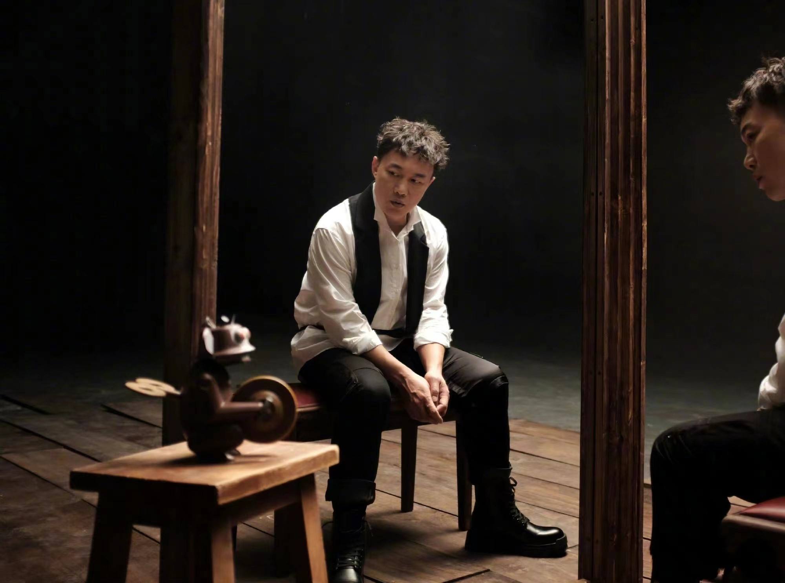

陈奕迅去年推出单曲《孤勇者》，连续12星期高居音乐平台榜首，歌曲势头强劲再度“封神”。日前一段小学生在教室内高声合唱《孤勇者》的视频在网上疯传，更登上微博热搜，微博上#陈奕迅都不知道唱的是儿歌#的标签更冲破3亿次阅读量，而视频累积近940万次观看，就连Eason都按奈不住为此发了2022年第一条微博回应：“听说我出了首儿歌？”大家更笑称Eason进军00后、10后市场，晋升为“儿歌歌手”，歌曲深得网民喜爱之余，火红程度更跨越不同年龄层。
《孤勇者》在国内两大音乐平台QQ音乐“热歌榜”及网易云音乐“热歌榜”成绩骄人，自2022年头至今分别达成连续11周冠军，及蝉联榜首12周。《孤勇者》推出至今在多个视频平台中被超过千万名用户作背景音乐发布短片，而播放量更打破30亿次，其中一句歌词“谁说站在光里的才算英雄”引起全网共鸣，歌曲一度被网络热传，用作为消防队员、人民警察、抗洪战士、奥运运动员、中国女足的战歌， 為身处不同岗位的人打气，为大家带来希望与勇气。
《孤勇者》在国内两大音乐平台QQ音乐“热歌榜”及网易云音乐“热歌榜”成绩骄人，自2022年头至今分别达成连续11周冠军，及蝉联榜首12周。《孤勇者》推出至今在多个视频平台中被超过千万名用户作背景音乐发布短片，而播放量更打破30亿次，其中一句歌词“谁说站在光里的才算英雄”引起全网共鸣，歌曲一度被网络热传，用作为消防队员、人民警察、抗洪战士、奥运运动员、中国女足的战歌， 為身处不同岗位的人打气，为大家带来希望与勇气。